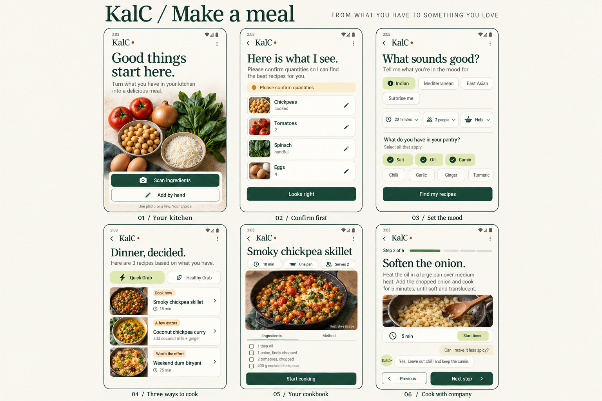

Cook now
Confirmed ingredients, enough for the chosen portions, available equipment and suitable for the active brief.
A kitchen companion that starts with your ingredients, finds your possibilities, and stays beside you while you cook.
One photo, several photos, or a typed list. You always confirm what the AI thinks it sees.
Your pantry, time, style and equipment. Three honest recipe groups; no assumed ingredients.
A proper recipe, focused cooking steps and a chat that understands the dish you selected.
Confirmed ingredients, enough for the chosen portions, available equipment and suitable for the active brief.
A small, exact shopping list. Name the missing ingredients and quantities before asking the user to choose.
Ambitious recipes with honest time, skill and ingredient requirements. “Premium” means a cooking project, not a surprise paywall.

AI-generated concept illustration. Its UI text and food photographs are illustrative; the interactive sample defines the exact inventory and matching rules.
This example never reads or stores health information. Enabling the switch below only simulates an egg-free preference.
In the real app, Make a meal would respect the existing Profile consent switch. Off means no saved profile details are attached. You can still specify today's food restrictions explicitly.